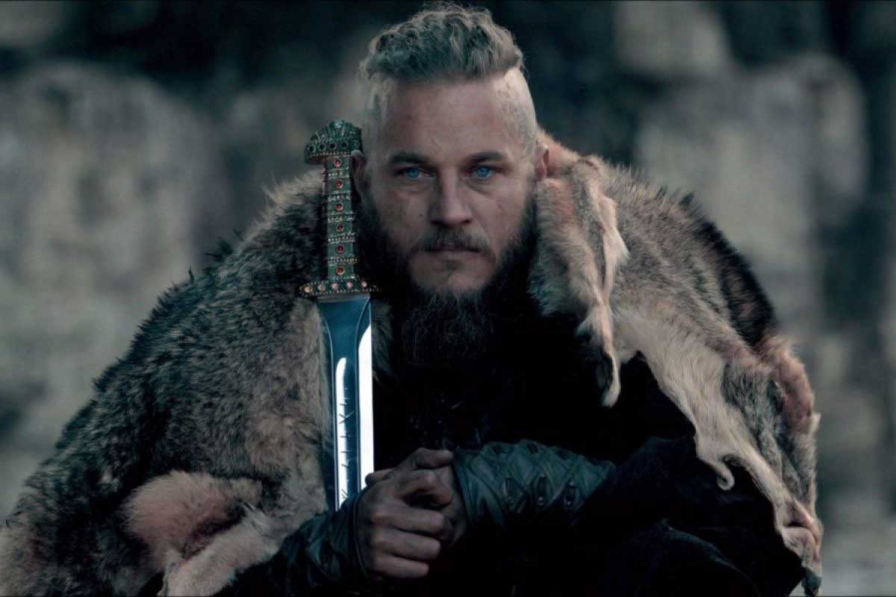

|

DIRECCION kattegat CONTACTO 3207563945 ragnarlothbrook@asgard.com APTITUDES
RESUMEN PROFESIONAL Soy guerrero nordico desde hace mas de 15 años he participado en los saqueos del este y descrubri la forma de navegar hacia el oeste aprendi la lengua de los sajones y su cultura lidere el ataque a paris y su conquista y tengo amplia vision en situaciones bajo presion. |
RAGNAR LOTHBROOKIDIOMAS
HABILIDADES DE GUERRA
CURSOS Y CERTIFICADOS
HISTORIAL DE GUERRA verano 1020 Jarl de kattegat
verano 1022 Rey ragnar
|